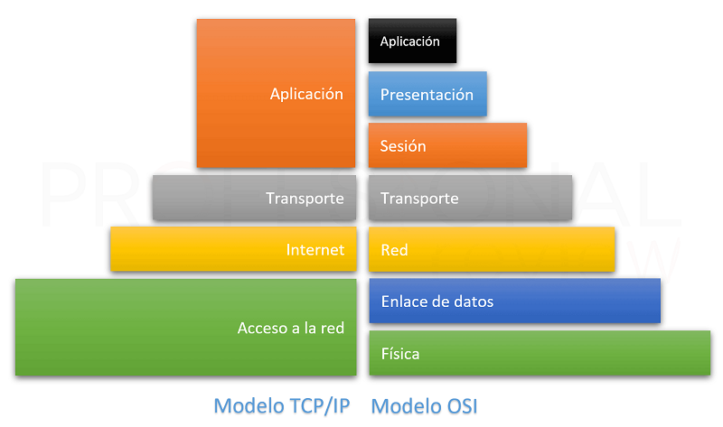
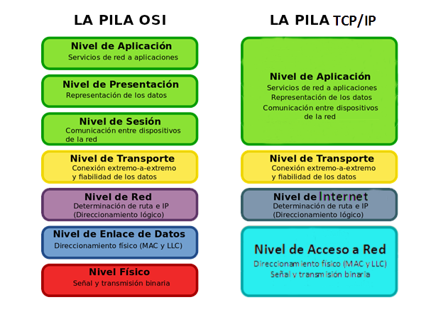

Historia del protocolo TCP/IP |
Que es el protocolo TCP/IP? |
Capas del modelo TCP/IP |
Ventajas de TCP/IP |
Desventajas de TCP/IP |
 Arquitectura de TCP/IP |
|
Universidad Autonoma de Chiapas Facultad de Contaduría y Administración Campus 1 Diseñado por: Mayra Vilchis Mendoza |
Licenciatura en sistemas computacionales Semestre 5° Grupo J |